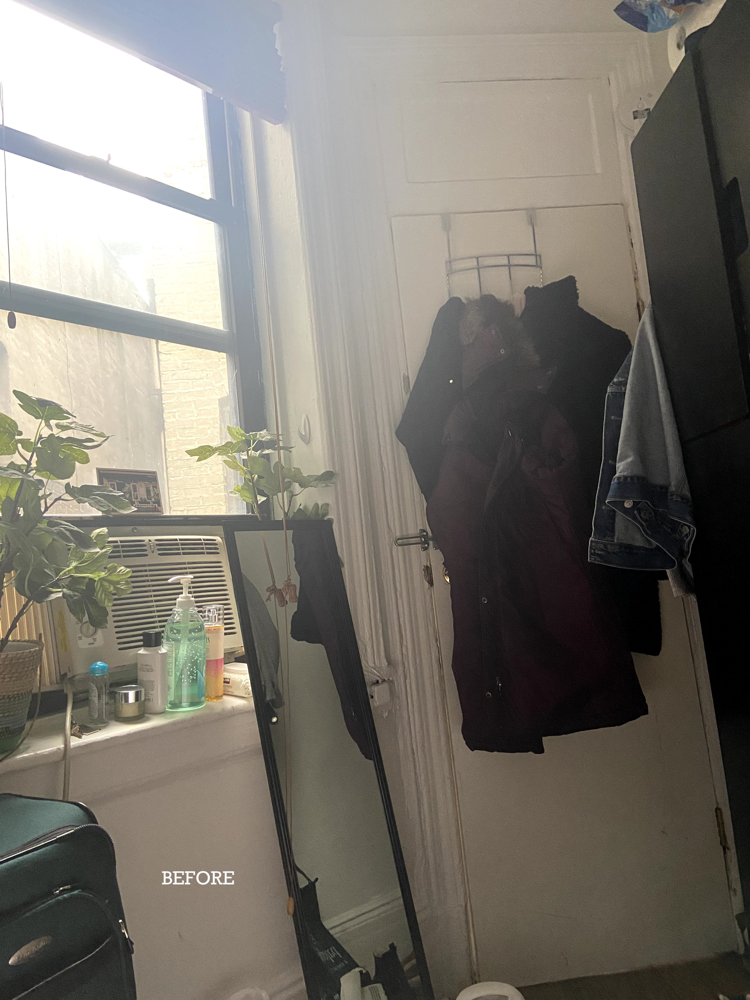
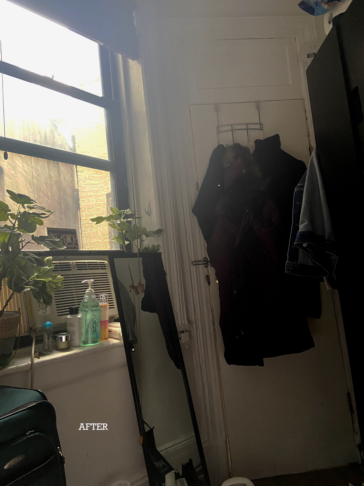
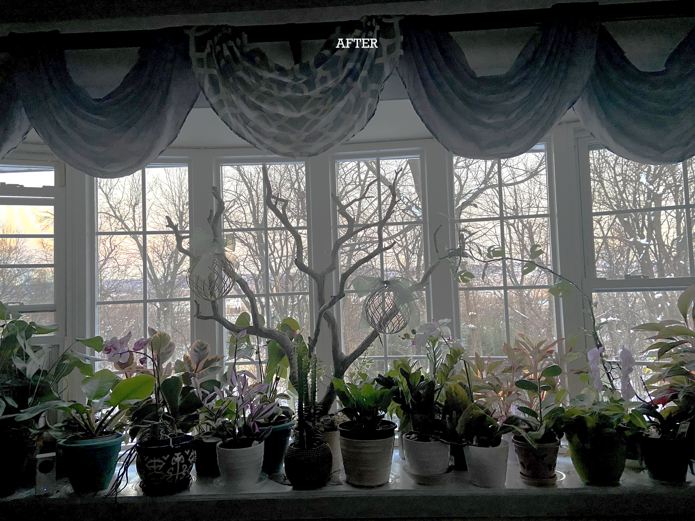

CSS3: CSS3 delivers a wide range of stylization and effects, enhancing the web app without sacrificing your semantic structure or performance. Additionally Web Open Font Format (WOFF) provides typographic flexibility and control far beyond anything the web has offered before.Semantics: Giving meaning to structure, semantics are front and center with HTML5. A richer set of tags, along with RDFa, microdata, and microformats, are enabling a more useful, data driven web for both programs and your users.Offline & Storage: Web Apps can start faster and work even if there is no internet connection, thanks to the HTML5 App Cache, as well as the Local Storage, Indexed DB, and the File API specifications.Device Access: Beginning with the Geolocation API, Web Applications can present rich, device-aware features and experiences. Incredible device access innovations are being developed and implemented, from audio/video input access to microphones and cameras, to local data such as contacts & events, and even tilt orientation.Connectivity: More efficient connectivity means more real-time chats, faster games, and better communication. Web Sockets and Server-Sent Events are pushing (pun intended) data between client and server more efficiently than ever before.
Multimedia: Audio and video are first class citizens in the HTML5 web, living in harmony with your apps and sites. Lights, camera, action!
3D, Graphics & Effects: Between SVG, Canvas, WebGL, and CSS3 3D features, you're sure to amaze your users with stunning visuals natively rendered in the browser.Performance & Integration: Make your Web Apps and dynamic web content faster with a variety of techniques and technologies such as Web Workers and XMLHttpRequest 2. No user should ever wait on your watch.
Performance & Integration: Make your Web Apps and dynamic web content faster with a variety of techniques and technologies such as Web Workers and XMLHttpRequest 2. No user should ever wait on your watch.Performance & Integration: Make your Web Apps and dynamic web content faster with a variety of techniques and technologies such as Web Workers and XMLHttpRequest 2. No user should ever wait on your watch.Performance & Integration: Make your Web Apps and dynamic web content faster with a variety of techniques and technologies such as Web Workers and XMLHttpRequest 2. No user should ever wait on your watch.Performance & Integration: Make your Web Apps and dynamic web content faster with a variety of techniques and technologies such as Web Workers and XMLHttpRequest 2. No user should ever wait on your watch.